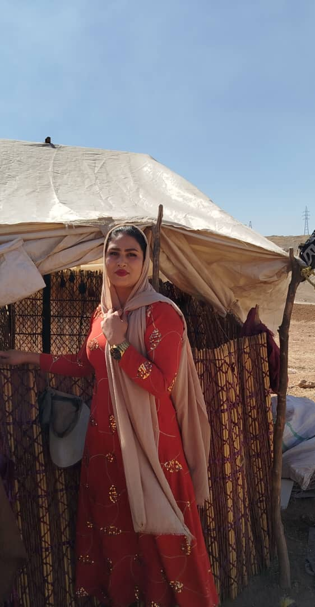
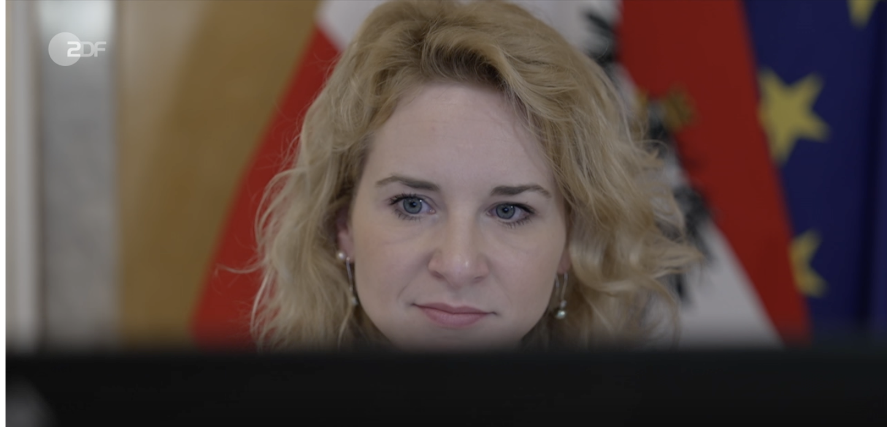
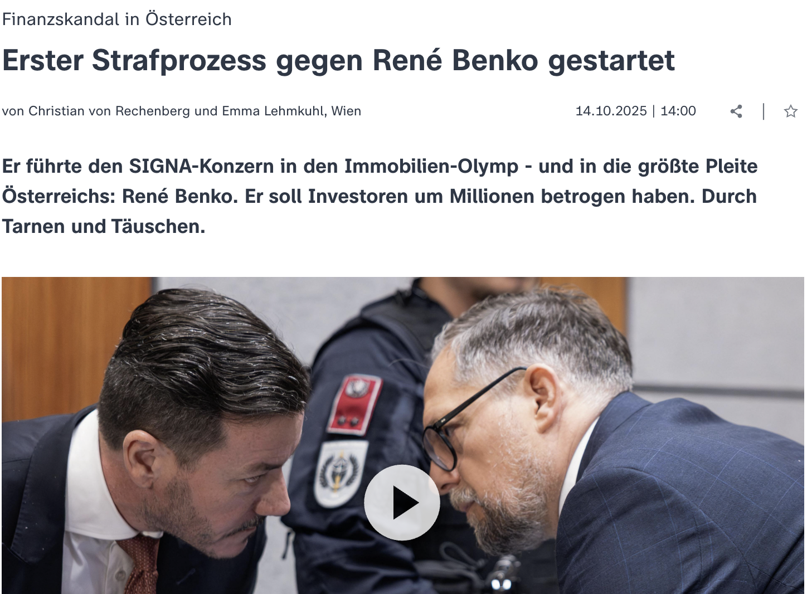

Beiträge
Beiträge · KI · Special Interest

Porträt
Iranische Kickboxerin: Ihr Vater sperrte sie ein – weil sie gewann
Von den heimlichen Anfängen bis zur eigenen Kampfschule: die Geschichte von Sahar Susan Rashidi – und ein Blick auf die Hürden, die sie überwand.

Der innere Erdkern dreht sich langsamer. Was bedeutet das?
Studienlage und Folgen: Was Messungen verraten, wie Forschende die Befunde einordnen und welche offenen Fragen zum Erdinneren bleiben.
Lesen →Mehr im
Autorenprofil von Emma Lehmkuhl.
 ▶
▶
ESA-Satellit gegen Extremwetter

▶US-Forschende finden neue Perspektiven
ZDF

Trump kürzt bei Forschung: Wissenschaftler ziehen nach Österreich
Wie Österreich mit neuen Stipendien und erleichterten Professuren Spitzenforscher aus den USA anzieht.
Lesen →
Finanzskandal in Österreich: Prozess gegen René Benko
Wie der Signa-Gründer vor Gericht steht, welche Vorwürfe im Raum stehen und warum der Mammutprozess international beobachtet wird.
Lesen →Max-Planck-Gesellschaft

Wie Wissenschaft im Film authentisch bleibt
Antje Boetius über den Science-Fiction-Thriller „Der Schwarm" – ein Interview über die Zusammenarbeit zwischen Wissenschaft und Filmproduktion und das Potenzial fiktionaler Formate für die Wissenschaftskommunikation.
Lesen →
Interview: Luftverschmutzung
Ein Gespräch über die Auswirkungen von Luftverschmutzung auf Gesundheit und Umwelt, aktuelle Forschungserkenntnisse und mögliche Lösungsansätze für eine sauberere Zukunft.
Lesen →
Five Questions – Interview (Max-Planck-Gesellschaft)
Interview im Format „Five Questions“ der Max-Planck-Gesellschaft (PDF).
Lesen →Weiteres

Was wir über die Wissenschaft nicht wissen
Ein kritischer Blick auf Wissenslücken in der Wissenschaftskommunikation und wie digitale Medien unser Verständnis von Forschung verändern können.
Lesen →
NS-Raubkunst: Die Spurenleserin
Recherche über die Spurensuche nach geraubter Kunst und ihre Bedeutung für Restitution und Erinnerung.
Lesen →
Medizin und Ozeanforschung: Auf der Spur neuer Wirkstoffe
Wie Meeresforschung und Medizin zusammenwirken, um neue Wirkstoffe und Diagnoseverfahren zu entdecken.
Lesen →
Akademisches Reisen und CO2: Vernetzung als Herausforderung?
Warum reisen Forschende um die Welt, wenn sie sich auch online austauschen könnten? Ein Video über den wissenschaftlichen Austausch und das Dilemma zwischen Reisen und Klimaschutz.
Lesen →
Kollegengespräch: Selbsttest Gesundheits-App
Podcast-Gespräch über Selbsttests und Gesundheits-Apps bei eldoradio*.
Lesen →